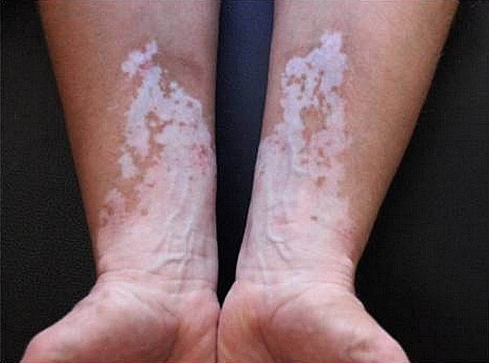
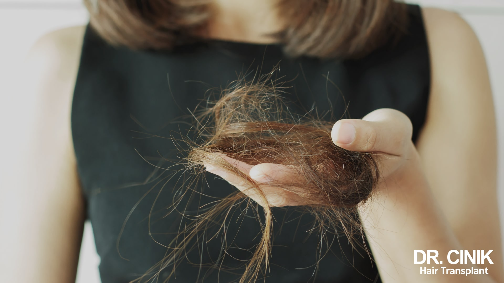
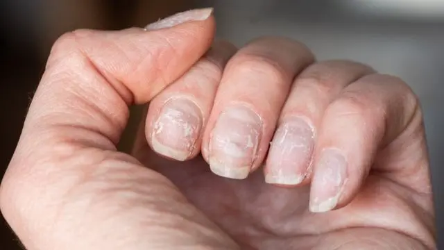
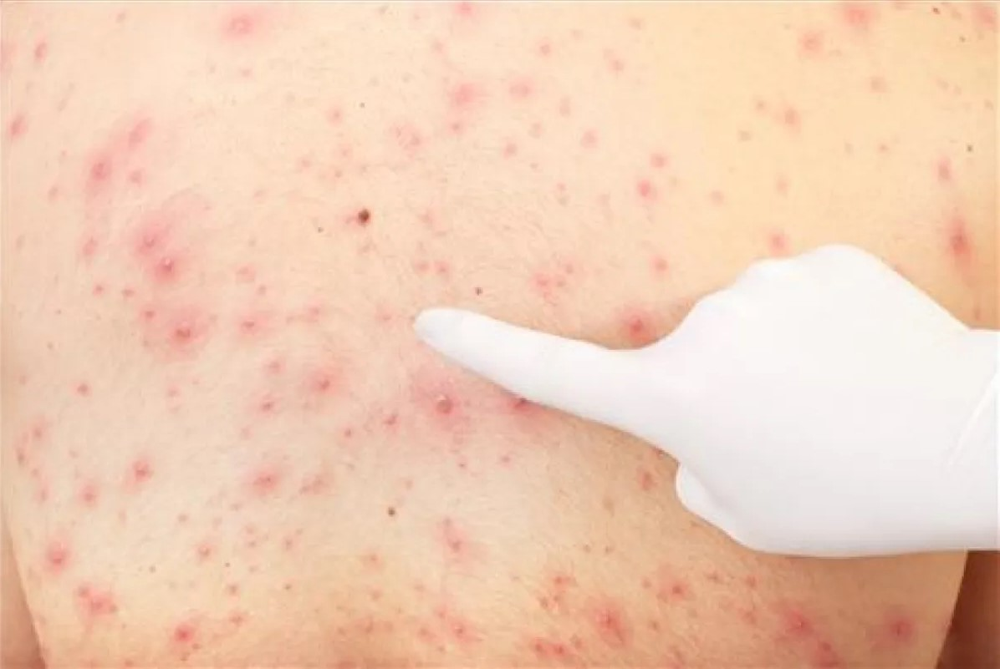
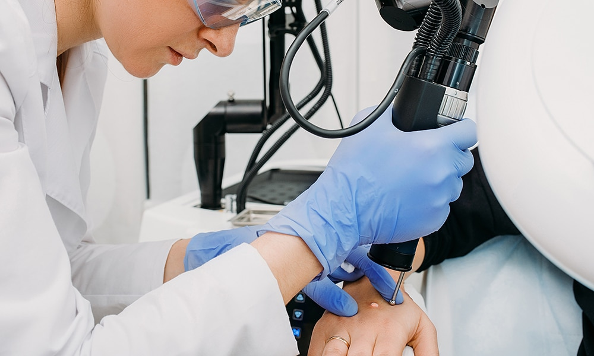
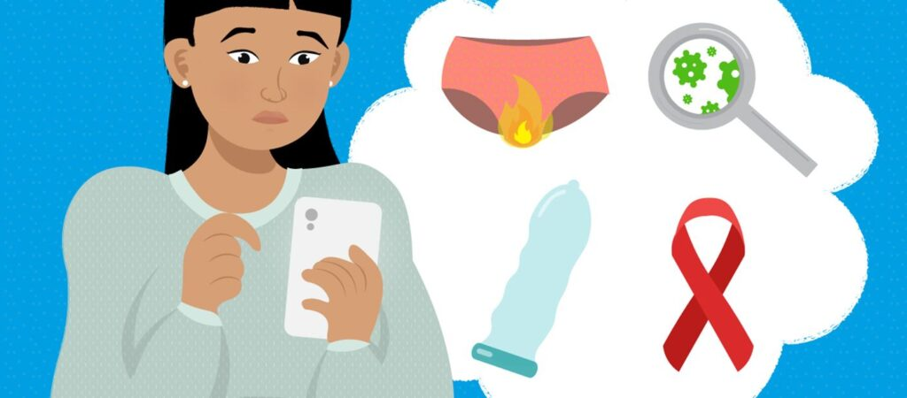
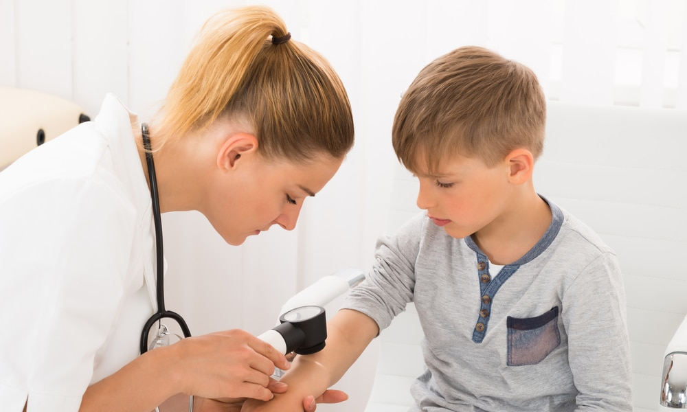
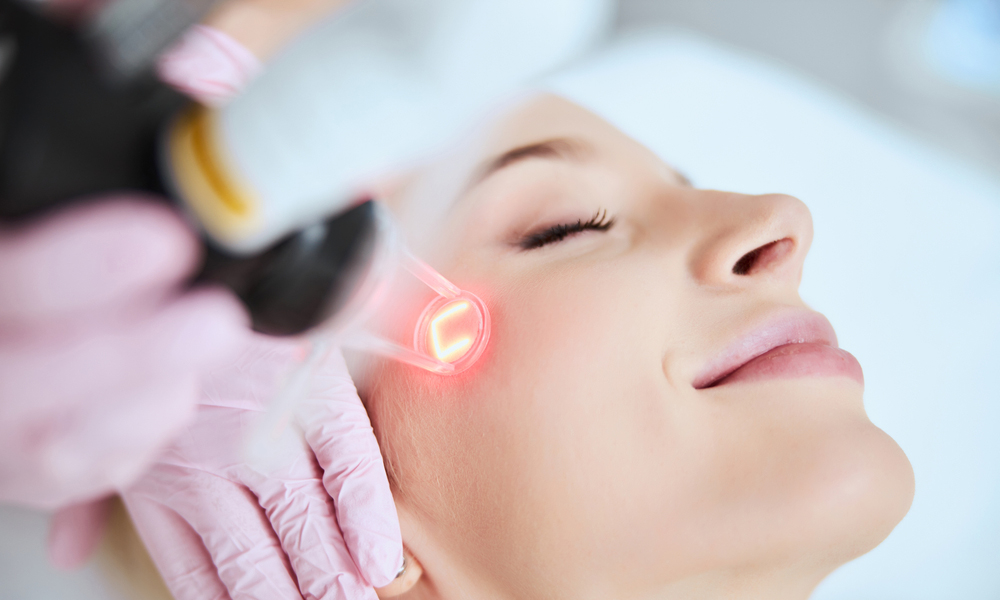

Nos Spécialités
Maladies de la peau, ongles et cheveux



Nous prenons en charge l'ensemble des affections dermatologiques touchant la peau, les ongles et les cheveux. Cela inclut les problèmes courants comme l'eczéma, le psoriasis, la chute de cheveux, les mycoses, ainsi que les maladies plus complexes nécessitant un suivi médical spécialisé. Notre objectif est d'offrir des traitements adaptés à chaque patient pour améliorer la santé et l'apparence de la peau et des phanères.
نحن نهتم بجميع الأمراض الجلدية التي تصيب الجلد والأظافر والشعر. يشمل ذلك المشاكل الشائعة مثل الأكزيما، الصدفية، تساقط الشعر، الفطريات، بالإضافة إلى الأمراض المعقدة التي تتطلب متابعة طبية متخصصة. هدفنا هو توفير علاجات مناسبة لكل مريض لتحسين صحة ومظهر الجلد والشعر والأظافر
Allergies cutanées



Les allergies cutanées se manifestent par des rougeurs, démangeaisons, éruptions ou irritations. Nous proposons un diagnostic précis via des tests cutanés (tests d'allergie, patch tests) pour identifier la cause et fournir un traitement personnalisé. L'intervention médicale vise à soulager les symptômes et à prévenir les récidives.
تظهر الحساسية الجلدية في شكل احمرار، حكة، بثور أو تهيج. نحن نقدم تشخيصًا دقيقًا عبر اختبارات جلدية (اختبارات الحساسية، اختبار الرقعة) لتحديد السبب وتوفير علاج مخصص. يهدف التدخل الطبي إلى تخفيف الأعراض ومنع تكرارها.
Chirurgie dermatologique



La chirurgie dermatologique consiste à enlever les lésions cutanées bénignes ou suspectes (grains de beauté, kystes, lipomes, tumeurs cutanées). Elle permet à la fois un geste thérapeutique et esthétique, en assurant une cicatrisation optimale et une analyse histologique si nécessaire.
الجراحة الجلدية تهدف إلى إزالة الآفات الجلدية الحميدة أو المشبوهة (الشامات، الأكياس، الأورام الدهنية، الأورام الجلدية). تُمكّن هذه التدخلات من تحقيق علاج طبي وجمالي في نفس الوقت، مع ضمان التئام جيد للجرح وإجراء فحص نسيجي عند الحاجة.
Maladies sexuellement transmissibles



Nous assurons le dépistage, le diagnostic et le traitement des maladies sexuellement transmissibles (MST), telles que l'herpès, la syphilis, la chlamydia ou le VIH. Une prise en charge confidentielle et personnalisée est proposée, associée à des conseils de prévention et d'éducation à la santé sexuelle.
نقوم بالكشف، التشخيص والعلاج للأمراض المنقولة جنسيًا مثل الهربس، الزهري، الكلاميديا أو فيروس نقص المناعة. نقدم متابعة طبية بسرية تامة وبأسلوب شخصي، مع تقديم نصائح للوقاية والتثقيف الصحي الجنسي.
Dermatologie pédiatrique



La dermatologie pédiatrique prend en charge les affections cutanées chez les nourrissons, enfants et adolescents. Cela comprend l'eczéma atopique, les infections cutanées, les taches congénitales, les verrues et l'acné juvénile. Notre approche est adaptée à l'âge de l'enfant, douce et rassurante pour les parents.
الأمراض الجلدية للأطفال تهتم بعلاج مشاكل الجلد عند الرضع، الأطفال والمراهقين. يشمل ذلك الأكزيما التأتبية، الالتهابات الجلدية، البقع الخُلقية، الثآليل وحب الشباب عند المراهقين. نعتمد على أسلوب علاجي لطيف يتناسب مع عمر الطفل ويطمئن الأهل
Dermatologie esthétique



La dermatologie esthétique regroupe des soins visant à améliorer l'apparence de la peau : traitement des rides, cicatrices, taches pigmentaires, perte de volume, relâchement cutané. Nous utilisons des techniques modernes comme les injections, le peeling, le laser et la mésothérapie, tout en respectant le naturel et l'harmonie du visage.
الأمراض الجلدية التجميلية تشمل علاجات تهدف إلى تحسين مظهر البشرة: معالجة التجاعيد، الندوب، البقع الصبغية، فقدان الحجم وترهل الجلد. نعتمد على تقنيات حديثة مثل الحقن، التقشير الكيميائي، الليزر والميزوثيرابي، مع الحفاظ على مظهر طبيعي ومتناسق للوجه.